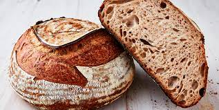

Simple Sourdough Bread

Description
Simple 3-ingredients sourdough bread anyone can make at their home.
Follow carefully through the recipe and bake your own first sourdough loaf:
Ingredients:
- Wheat flower (500 gr.)
- Water (300 ml)
- Salt (12 gr.)
- Sourdough starter* (200 gr.)
*If you don't have a starter already, simply follow this
link to make yourself one!
Steps:
- Mixing the ingredients:
- Take a large pot and poor in 300 ml luke warm water.
- Add 200 gr. of your sourdough starter and stir to mix.
- Add 12 gr. of salt and mix together.
- Add 500 gr. of White bread flour and mix together.
- Working the dough:
- Carefully mix all the ingredients so there is no dry flour patches left
- Kneed your dough until the gluten network is developed.
- If you are not sure if your gluten network is develpped enpugh you can perform
window blind test.
- Shape your dough into a bowl and let it rest for 3 hours on room temperature.
- Shape your dough once more and put it in clean bowl for final fermentation.
- Now you have two options depending on you schedule:
- Leave the dough to ferment on room temperature for 3 hours, or
- Put it in refrigerator overnight and bake in the morning.
- Baking the bread:
- Preheat the owen to 230 degrees Celsius
- Transfer your dough into baking pot with the lid on
- Bake for 50 minutes:
- bake covered for 30 minutes adn then
- uncover and continue baking for another 20 minutes
- Cover with clean cloth ann let it rest for at least 3 hours.